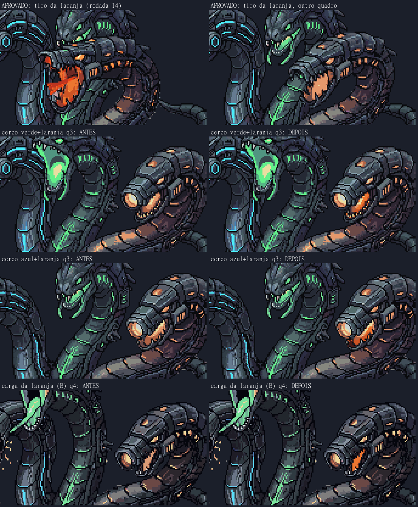
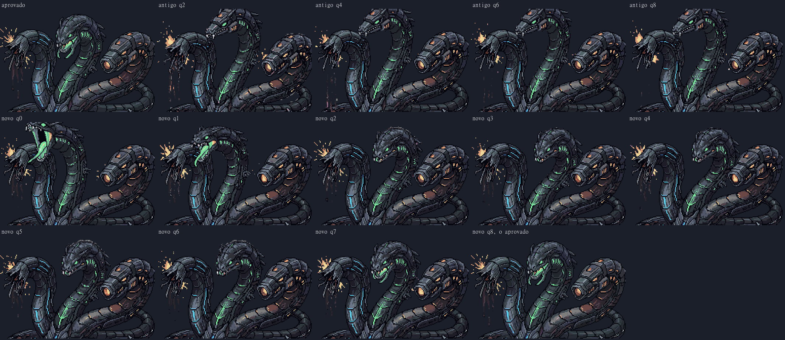
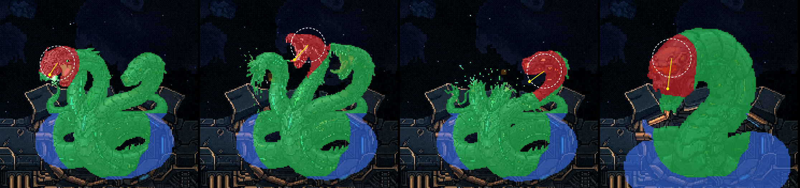
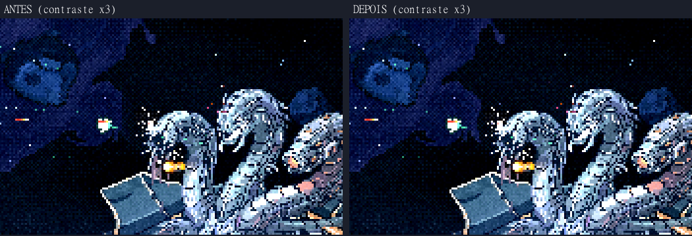

A Serpente: a consistência da arte nova, e as duas mudanças
02–03/11/2026 · antes de seguir para a chuva de casulos · nada foi commitado.
O que eu conferi
- Todos os 23 conjuntos do jogo, quadro a quadro, por um script (
scripts/_serpente/_consistencia.mjs). Ele mede a cor própria de cada cabeça em volta dela (o azul da azul, o verde da verde, o laranja da laranja) e compara com a pose aprovada. Uma cabeça que vira outra perde as suas luzes. O limite é o pior quadro dos conjuntos que você já aprovou.
Resultado: só o encolhe da verde (forma B) falhou, em 5 quadros. Depois de refeito, os 23 passam. - Cada conjunto novo ampliado, de olho, ao lado da arte aprovada: os três cercos e os seis gestos do gás da B.
- A azul de boca aberta tem a mesma cabeça longa com a garganta azul do raio aprovado.
- A verde tem o mesmo crânio redondo com a boca verde do gás aprovado.
- A laranja continua com o canhão.
- O toco continua um toco.
- O que o script não enxerga, e por isso eu confiro de olho:
- uma cabeça que muda de forma mas mantém as luzes;
- a cor da boca da laranja: a carne que o gerador pinta é a mesma paleta das placas do pescoço, então contar pixels não separa uma coisa da outra.
A boca da laranja
Nos cercos e na carga da forma B, o gerador encheu a boca aberta da laranja com a paleta das placas (pêssego e terracota), o que dava a boca de carne. Eu recoloro só a abertura da mandíbula com a rampa de brasa do tiro aprovado (a da rodada 14).
- A lente do canhão, o "olho" de cima, as aberturas laterais e o resto da serpente ficam idênticos, pixel por pixel.
- Na forma B a cabeça é maior e a primeira passada pegou também a lente e as aberturas laterais. Eu refiz pegando só a mancha da mandíbula, quadro a quadro.
- No bote, a boca está fechada, então ele ficou como era.



Uma observação: no próprio tiro aprovado, um quadro (o 4, em cima à direita) ainda tem a boca no pêssego. Deixei como está, porque é arte aprovada. Se quiser, igualo esse quadro também.
O encolhe da verde (forma B)
No encolhe antigo, entre os quadros 2 e 8 a verde virava outra cabeça: um focinho longo, chato e cinza, com um olho pequeno. Ela só voltava a ser ela no fim.
O novo tem as duas pontas fixas: a boca aberta do gás e a pose aprovada. A verde fecha a boca, se encolhe para trás e para a direita, e volta. O crânio redondo, o olho e as guelras verdes ficam o tempo todo. A laranja fica quieta.



- Foram 8 tentativas. As recusadas:
- as cabeças avançavam em vez de recuar;
- a verde virava uma cabeça fina de espinhos;
- em quatro delas, o canhão da laranja disparava sozinho. A palavra "recuo" (recoil) faz o gerador tratar a laranja como uma arma.
- São 9 quadros em vez de 13. A maquete toca o encolhe em 1,2 s, qualquer que seja o número de quadros, então o tempo não muda.
- A posição da cabeça vulnerável em cada quadro (para o acerto e as veias) foi lida de novo nas guelras.
As duas mudanças que você escolheu
Ela fica fixa no posto. Saíram a troca entre 3 alturas, o balanço de "respirar" e a descida antes de cada habilidade. Só as animações a mexem. Ela sobe pelo rombo só na chegada e afunda só na fusão. A sonda mediu y = 142 o tempo todo, nas quatro formas.
O corpo inteiro leva dano. Qualquer pixel visível dela leva dano; o tiro que passa no vazio entre os pescoços continua voando. A cabeça que vai cair vale 1,5×.
- Onde o lábio do rombo cobre as roscas, o casco absorve o tiro. Dentro do buraco as roscas aparecem e levam dano.
- A "cabeça" é o desenho dela do crânio até um pouco depois da boca. O focinho da verde e o canhão da laranja contam como cabeça. Isso precisou de duas correções:
- a ponta do focinho da verde ficava de fora;
- a primeira versão pegava o pescoço da azul morta, ao lado da boca da verde.
- Na forma C, o toco da verde fica na frente do crânio da laranja. Na altura do crânio, o tiro acerta o toco e vale 1×; pelo alto da cabeça (10 linhas), vale 1,5×.
- A vida de cada forma dobrou (100, 100, 100 e 120 na fusão), porque agora quase todo tiro acerta. O número é provisório: a gente calibra jogando.
- O clarão rosa de dano agora acende só no acerto da cabeça. Com o corpo levando dano, ele piscava a cada tiro, a luta toda (medi 1 quadro em cada 3). No corpo ficam a fagulha e a marca; na cabeça, o respingo e o clarão. Isso também mostra que a cabeça vale mais.
- A bomba também fere o corpo.

As sondas passaram: os tiros (leque com vão em 17 de 17; o cerco erra quem fica no meio em 16 de 16 e acerta quem sobe em 16 de 16) e a fase 3 de ponta a ponta, até o hangar.
A tela preta em volta da serpente
Corrigida. Era a camada das veias: o brilho aditivo do Phaser escurece o que é semitransparente atrás dela, e a nuvem do fundo é semitransparente. Por isso a caixa aparecia mais quando passava nuvem clara.
Troquei por um aditivo puro, que só soma luz. Medida no céu logo dentro da borda do quadro:
- antes: 28,9;
- fora do quadro: 32,3;
- agora: 35,1, igual a sem as veias.

Achei mais uma coisa, que fica para o cenário: a camada de brilho dos destroços cobre a tela inteira e escurece um pouco todas as nuvens do jogo, do mesmo jeito. Como é a tela inteira, não forma caixa. Não mexi porque é um sistema do jogo todo. Anotei para quando formos melhorar o cenário, logo depois da luta.
Para você conferir
- A boca da laranja ficou na cor certa?
- O encolhe novo da verde ficou bom?
- Ela parada no posto, e o acerto no corpo, ficaram como você queria? O clarão só na cabeça está bom?
- Posso seguir para a chuva de casulos?